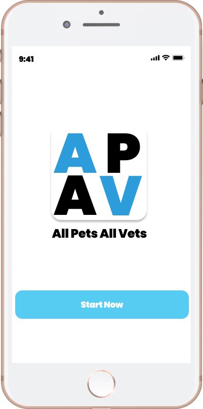
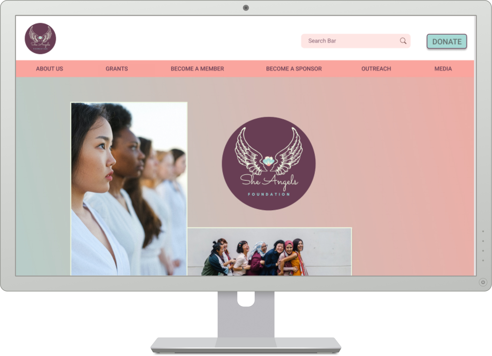

MY WORK


All Pet All Vet
Mobile App Challenge
TASK
User Research, UX Design, UI Design
GOAL
Design a mobile app that enables pet parents to find
adequate and appropriate primary care for all species of pets.

She Angels Foundation Website Redesign
Course Project at UC Berkeley Boot Camp
A user research and redesign that allows SheAngelsFoundation
be able to provide a more trustworthy pleasant user experience.
TASK
User Research, UX Design, UI Design
GOAL
Resign the SheAngelsFoundation site by implementing on user-centered design process.